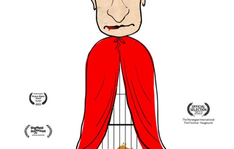
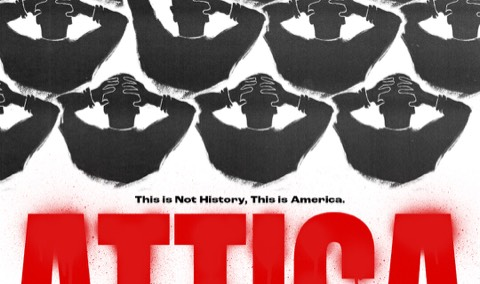

Terrorism & national security
Counter-terrorism, intelligence agencies, secrecy.
16 films · 6 sessions · 71 people
Often together with: War, conflict & the militaryCriminal justice & prisonsSurveillance & privacyWhistleblowers & leaksMiddle East & South AsiaDemocracy & elections
Films
 BombshellBen Loeterman2025 · 82 min
BombshellBen Loeterman2025 · 82 min Cover-UpLaura Poitras, Mark Obenhaus2025 · 117 min
Cover-UpLaura Poitras, Mark Obenhaus2025 · 117 min The Accidental SpyAnthony Wonke2024 · 98 min
The Accidental SpyAnthony Wonke2024 · 98 min- All Static & NoiseDavid Novack2023 · 102 min
- Phantom ParrotKate Stonehill2023 · 82 min
- The Lost Souls of SyriaStéphane Malterre2023 · 99 min
 Myanmar DiariesThe Myanmar Film Collective2022 · 70 min
Myanmar DiariesThe Myanmar Film Collective2022 · 70 min
The New Greatness CaseAnna Shishova-Bogolyubova2022 · 96 min 3212 Un-RedactedBrian Epstein, James Gordon Meek, Andrew Fredericks2021 · 100 min
3212 Un-RedactedBrian Epstein, James Gordon Meek, Andrew Fredericks2021 · 100 min
ATTICAStanley Nelson, Traci A. Curry (co-)2021 · 111 min Day of RageMalachy Browne, David Botti2021 · 40 min
Day of RageMalachy Browne, David Botti2021 · 40 min The Feeling of Being WatchedAssia Boundaoui2018 · 87 min
The Feeling of Being WatchedAssia Boundaoui2018 · 87 min- The TrialJohanna Hamilton2018 · 17 min
 SolitaryKristi Jacobson2016 · 82 min
SolitaryKristi Jacobson2016 · 82 min- (T)ERRORLyric Cabral, David Felix Sutcliffe2015 · 93 min
- DroneTonje Hessen Schei2015 · 80 min
Sessions
- 2026 · Fri Nov 6 · 1:15pmPanelCast Out and Speaking UpLibby Liu, Miriam Shor, Ashley Kostial, Jeremiah Schofield, Matt Drange, Amelia O’Rourke-Owens
- 2024 · Thu Nov 7 · 10:20 AMPanel · DX²Are Documentaries Journalism? When Prosecutors DecideTrevor Aaronson, Kathleen McClellan, Gordon Quinn, Seth Stern, Patricia Aufderheide
- 2021 · Wed Oct 13 · 3:30pmPanelThe Surveillance TrilogyKatherine Fehr Chandler, Jesselyn Radack, Ines Hofmann Kanna, Sonia Kennebeck, Katie Townsend
- 2020 · Wed Oct 14 · 3:00pmPanel · DX²DX Masterclass: Unlocking the Investigative Process with Katherine EbanKatherine Eban
- 2020 · Wed Oct 14 · 2:00pmPanel · DX²The Big SocialMarek Tuszynski, Brittany Kaiser, Larissa Rhodes, Jeff Orlowski
- 2018 · Thu Oct 11 · 11:00 AMPanelPivot: The Unexpected MomentMarcia Davis, Paco De Onís, Bridget Hunnicutt, Patrick Radden Keefe, Gordon Witkin, Pamela Yates
People most involved
- Assia BoundaouiPanelist, filmmaker · 2 editions, 2017–2018

- Johnny HoworthFilmmaker, panelist · 2024
 Ben LoetermanPanelist, filmmaker · 2 editions, 2024–2025
Ben LoetermanPanelist, filmmaker · 2 editions, 2024–2025 Gaia de SimoniPanelist, filmmaker · 2 editions, 2024–2025
Gaia de SimoniPanelist, filmmaker · 2 editions, 2024–2025 Laura PoitrasFilmmaker, panelist · 2 editions, 2025–2026
Laura PoitrasFilmmaker, panelist · 2 editions, 2025–2026 Mark ObenhausFilmmaker, panelist · 2025
Mark ObenhausFilmmaker, panelist · 2025 Seymour HershFilm subject, panelist · 2025
Seymour HershFilm subject, panelist · 2025- Tonje Hessen ScheiFilmmaker · 2015
- Tom BlantonPanelist · 2015
- Sabrina BuchwalterPanelist · 2015

- Scott ShanePanelist · 2015
 Lyric CabralPanelist, filmmaker · 3 editions, 2015–2017
Lyric CabralPanelist, filmmaker · 3 editions, 2015–2017 David Felix SutcliffeFilmmaker, panelist · 2015
David Felix SutcliffeFilmmaker, panelist · 2015- Eric LichtblauPanelist · 2015
 Kristi JacobsonFilmmaker, panelist · 2016
Kristi JacobsonFilmmaker, panelist · 2016- Lisa ArmstrongModerator · 2016
 Pete EarleyPanelist · 2016
Pete EarleyPanelist · 2016- Johanna HamiltonFilmmaker, panelist, workshop leader · 2 editions, 2015–2018
- The Myanmar Film CollectiveFilmmaker · 2022


 Anna Shishova-BogolyubovaFilmmaker · 2022
Anna Shishova-BogolyubovaFilmmaker · 2022 Vasily PolonskyFilm subject, panelist · 2022
Vasily PolonskyFilm subject, panelist · 2022- Kate StonehillPanelist, filmmaker · 3 editions, 2022–2025
 David NovackFilmmaker, panelist · 2023
David NovackFilmmaker, panelist · 2023- James MillwardModerator · 2023
 Stéphane MalterreFilmmaker · 2023
Stéphane MalterreFilmmaker · 2023- Garance Le CaisnePanelist · 2023
- Anthony WonkeFilmmaker · 2024
- Blerim SkoroFilm subject · 2024